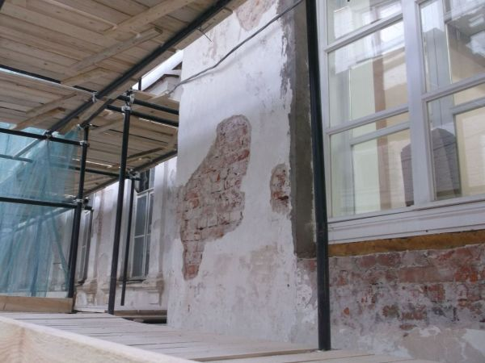
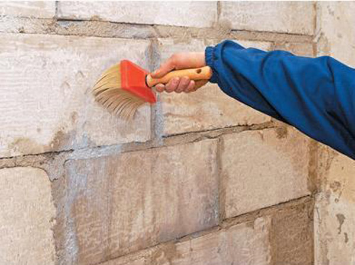
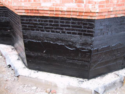
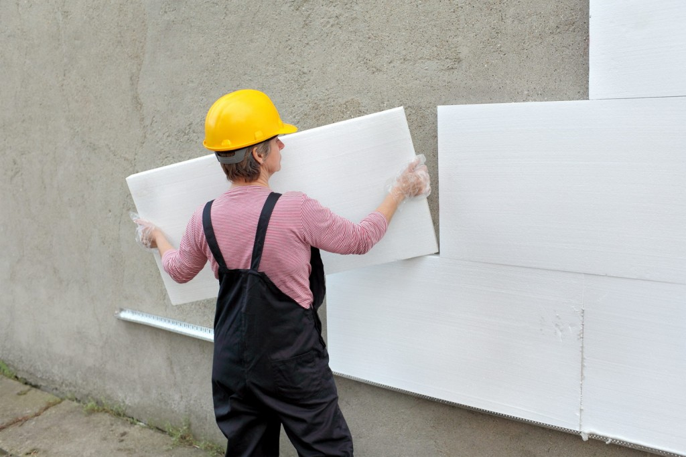
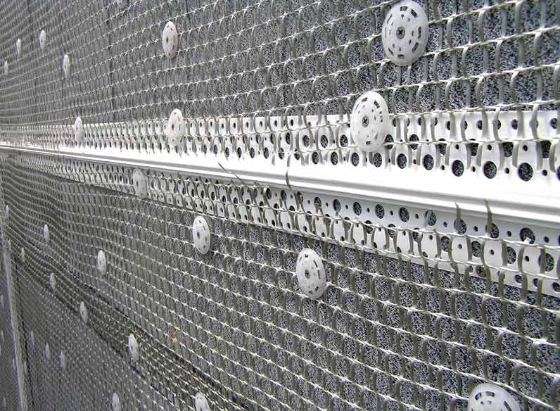
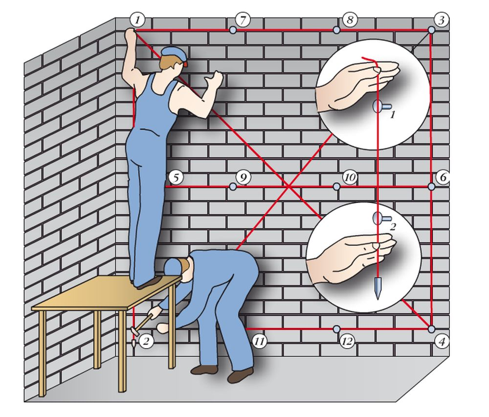
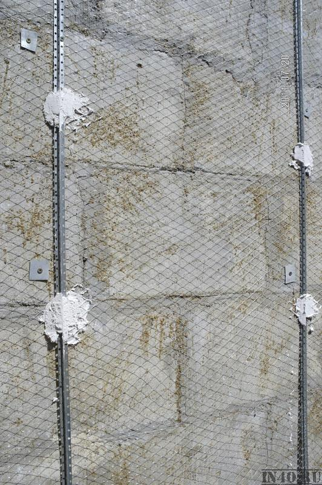
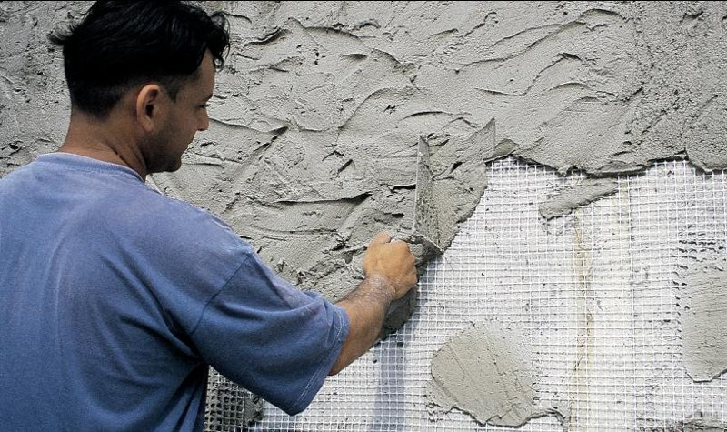

Штукатурка фасада своими руками
Фасадные работы – процесс трудный и ответственный. Надеемся, что наши практические советы и рекомендации вам пригодятся при оштукатуривании. В статье рассмотрим процесс, который предполагает произведение первоначального выравнивания с утеплением стен и нанесением декоративного слоя.
Расшивка трещин и выбоин на старой штукатурке
Нанесение грунта на зачищенную поверхность для создания защитного слоя
Нанесение гидроизоляции на цокольную часть фасада
Установка панелей из пенополистирола для утепления
Вариант фиксации металлической сетки для армирования штукатурки
Принцип изготовления обвеса стены
Установка маяков поверх армирующей сетки
Нанесение раствора
ручным методом
При работе на большой высоте мастера заменяют правило теркой
Затирка декоративного слоя
- Удалите старое покрытие, полностью зачистите поверхность. При ремонте штукатурки демонтируйте только участки, подвергшиеся деформации или отставшие от стены. Определите такие поверхности по глухому звуку при простукивании молотком. Если повреждения стены – более 30% от всей площади, зачищайте весь фасад: остальная часть старой поверхности скоро обвалится.
- После завершения черновых работ на стену нанесите слой грунтовки для лучшей адгезии материалов и защиты от грибка и плесени при наличии антибактериальных компонентов.
- Нанесите слой гидроизоляции на уровне цоколя, чтобы защитить часть дома, ближе всего расположенную к земле, от влаги. Используйте битум или специальные составы на его основе. Хорошо зарекомендовали себя и рулонные материалы, фиксирующиеся при помощи специального крепежа или ленты.
- Наружное расположение защиты от холода позволяет правильно разместить точку росы и избежать появления конденсата. В качестве утеплителя можно использовать пенополистирол. Его фиксируют прямо на стену с помощью посадочного гипса или специального крепежа. Заделайте места стыков скотчем.
- Армирование – при помощи металлической сетки, которую крепят к стене специальными ударными дюбелями. Благодаря такой системе получается прочное основание, которое отлично удержит раствор на поверхности, не давая ему упасть, что важно при создании толстых слоев.
СЕТКУ ДЛЯ АРМИРОВАНИЯ НЕОБХОДИМО УСТАНАВЛИВАТЬ БЕЗ СИЛЬНОГО НАТЯЖЕНИЯ, НО ПРИ ЭТОМ ОНА И НЕ ДОЛЖНА ПРОВИСАТЬ. НЕКОТОРЫЕ МАСТЕРА ПРЕДПОЧИТАЮТ ИСПОЛЬЗОВАТЬ МАТЕРИАЛ С ФИКСИРОВАННЫМ РАЗМЕРОМ ЯЧЕЕК, ЧТО ЗНАЧИТЕЛЬНО ОБЛЕГЧАЕТ РАБОТУ
- Если работа производится впервые и своими руками, то профессиональные мастера советуют использовать металлический профиль, фиксируемый на посадочный гипс. Он отлично выдержит даже сильные воздействия, а закрепляющая их смесь быстро застынет, что сэкономит массу времени. Устанавливайте маяки на одинаковом расстоянии друг от друга, равном длине правила, от которой отнимите 20 см. Такое расположение считается самым удобным при работе.
ПОСЛЕ ТОГО КАК ПОСАДОЧНЫЙ ГИПС НА МАЯКАХ ЗАСТЫНЕТ, ВСЮ ПОВЕРХНОСТЬ ЕЩЕ РАЗ ОБРАБОТАЙТЕТ ГРУНТОВКОЙ ДЛЯ УВЕЛИЧЕНИЯ АДГЕЗИИ К МАТЕРИАЛУ
- Выравнивайте маяки, по плоскости ориентируясь на отвесы и нити, которые натягивают по диагонали поверхности между углами. Такой отвес должен контролировать плоскость поверхности и устанавливается перед началом изготовления направляющих.
- Нанести штукатурную смесь на поверхность стены в пространство между маяками можно вручную, но лучше использовать специальные станции (можно взять в аренду). Они не только смешивают раствор, но и подают его на определенную высоту, где и производят наброс.
Штукатурную смесь наносите слоем, равным поверхностным граням маяков. Затем при помощи правила вытягивайте смесь по направляющим. Остатки штукатурки снимайте отдельно, чтобы заполнить места, где ее не хватает. После застывания смеси нанесите грунтовку – соединительный элемент между слоями.
Далее стену следует покрыть декоративными смесями для оштукатуривания. Советуем детально изучать инструкции по эксплуатации материала и использовать в работе знакомые материалы. Также не помешают консультации специалистов и прочие пособия.
- После нанесения декоративного слоя и его застывания можно дополнительно обработать стены грунтовкой. Она послужит защитой от осыпания и усилит адгезию к краске или лаку. Если наносить декоративный слой не нужно, то поверхность можно обработать полиуретановой теркой с добавлением воды. Так она получится гладкой и очень ровной.

{kind=link}
{kind=link}
{kind=link}
{kind=link}
{kind=link}
{kind=link}
{kind=link}
{kind=link}